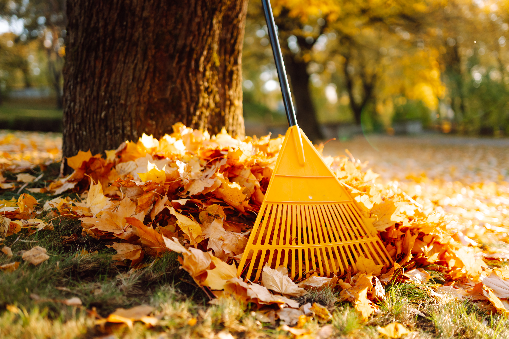
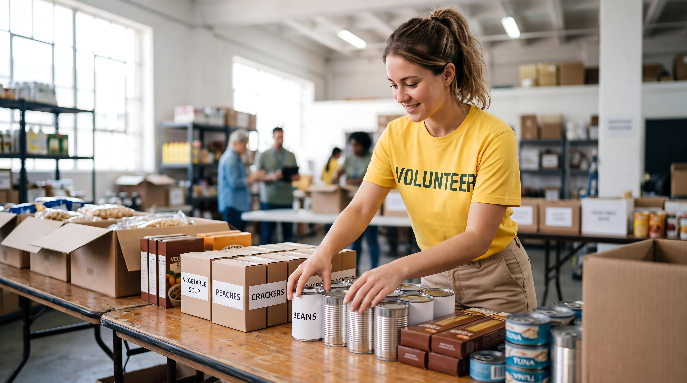
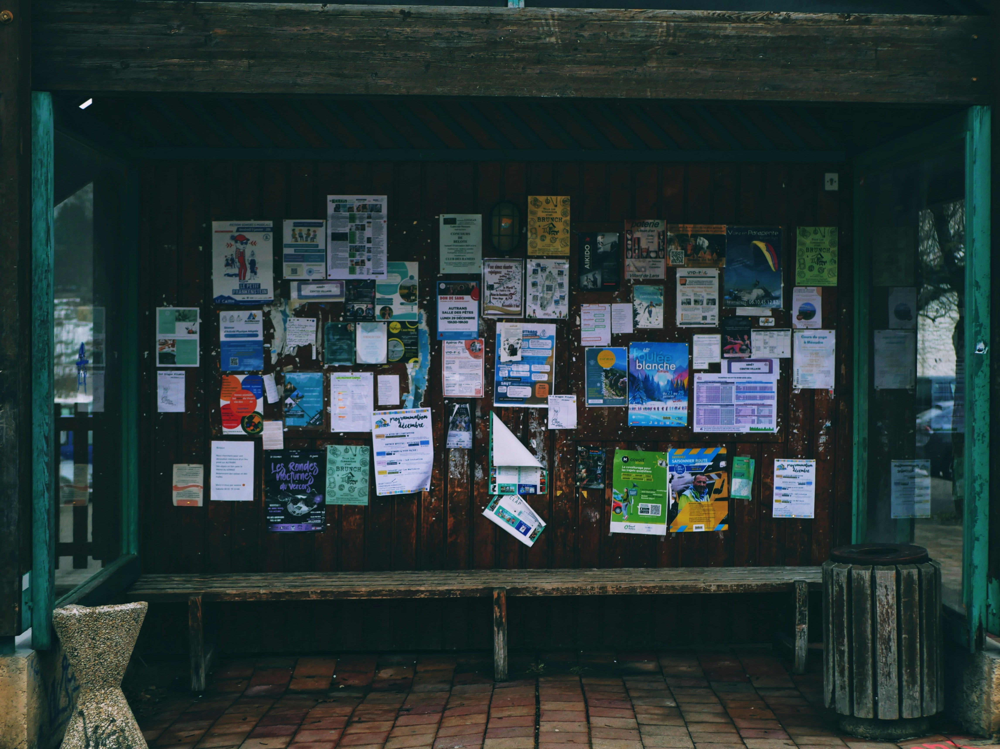

Upcoming Event
Fall Community Cleanup

October 18 · 9:00 AM
Join neighbors for a morning cleanup of shared outdoor spaces around Desert Palms.
View upcoming eventsFind local events, explore community resources, and learn where to go when you need information or support.
Upcoming Event

October 18 · 9:00 AM
Join neighbors for a morning cleanup of shared outdoor spaces around Desert Palms.
View upcoming eventsVolunteer Opportunity

Flexible weekday shifts
Help organize donated groceries and prepare food-assistance packages for community members.
Explore volunteer opportunitiesCommunity bulletin boards are easy to ignore. They sit near the entrance of a coffee shop, apartment building, library, school, or community center, usually covered in flyers that have been pinned, stapled, layered, and forgotten. Some are neat and organized. Others look like they have been collecting paper since 2004.
Either way, people still use them.
That feels a little strange when so much of our communication has moved online. If someone wants to advertise an event, sell a couch, find a roommate, or offer a service, they can post it online in a few seconds. A paper flyer pinned to a wall obviously cannot compete with the reach of the internet.
But reach is not the only thing that matters.
A bulletin board puts information directly into a place people are already using. You do not have to follow the right account or know what to search for. Sometimes you are waiting for coffee, walking into class, checking your mail, or leaving a building when something catches your eye.
You were not looking for it. You just happened to see it.

The thing I like about community boards is that they are rarely polished. They are usually a mix of whatever the people around them decided was worth sharing.
There might be a lost-pet flyer next to an advertisement for guitar lessons. Someone is selling a desk. Someone else is promoting a local event. There could be a volunteer opportunity, a club meeting, a room for rent, or a handwritten note with tear-off phone numbers along the bottom.
None of it necessarily belongs together. That is kind of the point...
Want to read more? Read the full feature here.